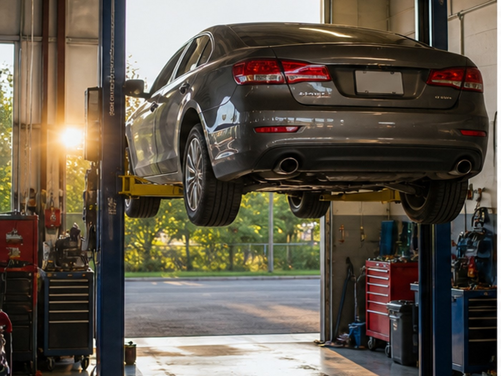
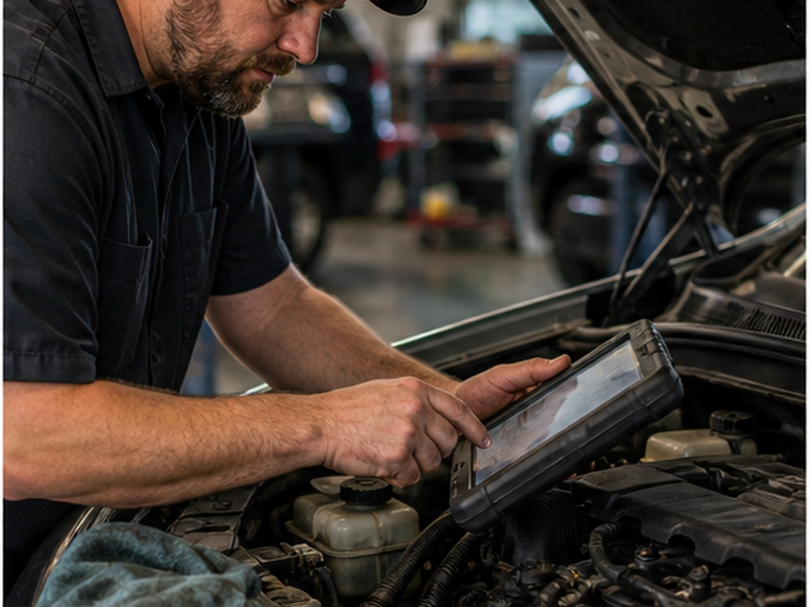
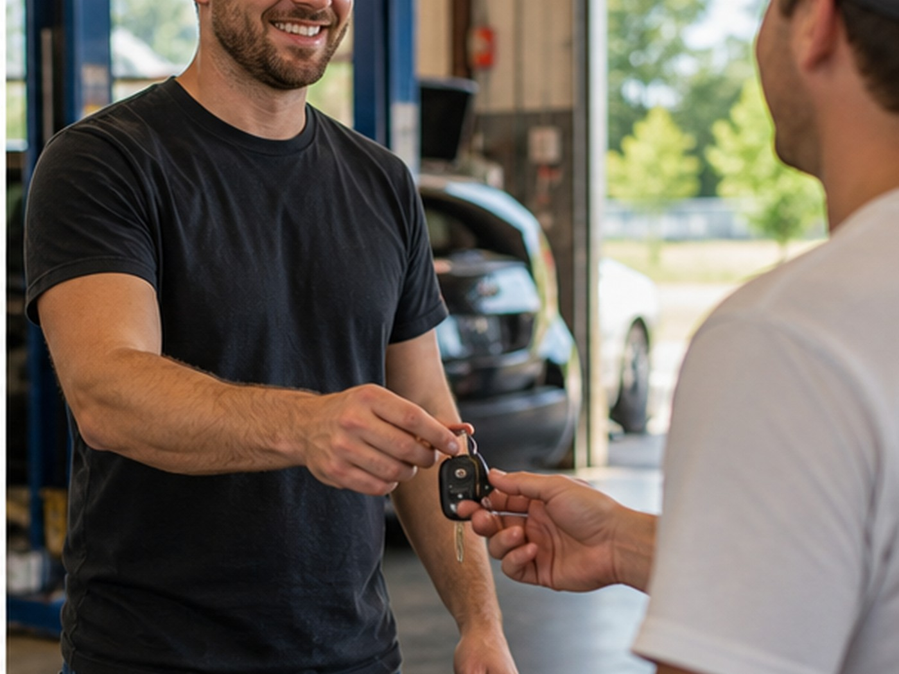

Spartanburg auto repair
A high-trust shop deserves a high-converting site.
The site turns a strong review profile into a fast mobile path for diagnostics, repairs, and maintenance calls.
- 4.9271 Google reviews
- Auto RepairSpartanburg, SC
- FastTap-to-call scheduling

Services
Clear options for local customers.
- Diagnostics
- Brake repair
- Engine service
- Oil changes
- Electrical checks
- Maintenance

Local service
Searchers can see the trust before they make the call.
With hundreds of strong reviews, the opportunity is not proving quality. It is making that quality visible, scannable, and easy to act on.

Service path
Prioritize the repair request.
Diagnostic requests should start with symptoms, vehicle details, and whether the issue is safe to drive.
Local proof
Built around the trust customers already look for.
- 4.9-star Google rating
- 271 public reviews
- Spartanburg service area
Contact
E.M. Auto Repair
Spartanburg, SC